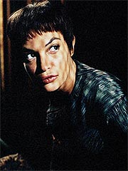
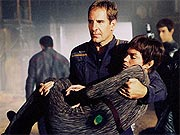
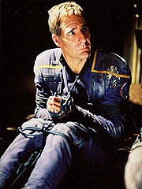
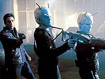
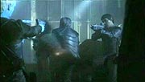
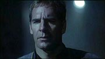

Episdio
anterior | Prximo
episdio
Sinopse:
No Comando da Frota Estelar, em San
Francisco, o almirante Forrest conferencia com uma delegao
Vulcana, chefiada pelo embaixador Soval. Ele informa Forrest de
que os Andorianos destruram o santurio de P'Jem e culpa a
Enterprise e a inabilidade do capito Archer de terem definido o
destino do posto avanado.
Embora Forrest tente defender seu oficial e apontar a
responsabilidade dos Vulcanos em romperem os Acordos de Tau Ceti,
estabelecidos entre eles e os Andorianos, Soval comunica que estar
retornando a Vulcano e que por ora todos os programas espaciais
conjuntos de Terra e Vulcano esto suspensos. A ordem inclui a
chamada de T'Pol de volta a seu planeta natal.

Forrest entra em
contato com a Enterprise e comunica Archer da deciso. O capito
estava se preparando para, junto de Tucker, fazer uma visita
capital do planeta Coridan, a convite do governo local. Diante das
circunstncias, ele decide substituir Trip por T'Pol, na
tentativa de convenc-la a protestar contra as ordens do Alto
Comando Vulcano.
A oficial de cincias, entretanto, est se sentindo culpada pela
destruio de P'Jem e acha justo que seja punida por seus
superiores. Mesmo quando Archer aponta que ele teve total
responsabilidade pelo incidente, ela argumenta que nem sequer
registrou um protesto contra as aes do capito.
Os dois descem a Coridan em um shuttlepod, mas so interceptados
em rbita por uma outra aeronave. Abatidos, os dois so
capturados e levados para um cativeiro. Depois de amarrados
juntos, eles so interrogados. O grupo que os sequestrou faz
parte de uma organizao terrorista contrria ao governo local,
que segundo eles corrupto e sustentado por foras Vulcanas.
Na Enterprise, Tucker informado pela Chanceler do governo de
Coridan que seu capito e T'Pol foram sequestrados. A governante
assegura-o de que todos os esforos esto sendo feitos para
resgatar os oficiais, mas Trip no est muito convencido. Ele
ordena que Hoshi Sato comece a procurar por sinais de vida de
Archer e T'Pol ou por uma leitura que aponte a localizao do
shuttlepod.

O veculo
localizado, e Malcolm Reed prope o envio de uma tropa de
assalto. Tucker est hesitante, mas comea a concordar com a idia
depois que os terroristas contatam a Enterprise, exigindo 40
pistolas de fase em troca dos prisioneiros. Mesmo assim, ele s
toma a deciso depois que a nave Vulcana enviada para buscar
T'Pol chega ao local, e o capito Sopek comunica que est
assumindo controle da situao e pretende enviar seu prprio
grupo de assalto ao planeta.
Tucker e Reed descem em um outro shuttlepod, mas so sequestrados.
Desta vez, no so os terroristas, mas os Andorianos Shran e
Tholos. Eles dizem que esto l para ajudar no resgate de Archer
e pagar o dbito que foi deixado quando o capito humano os
ajudou a encontrar a instalao secreta dos Vulcanos em P'Jem.

Juntos, os quatro
conseguem invadir o complexo controlado pelos terroristas, mas
ainda precisam evitar o fogo cruzado que causado quando a tropa
de assalto Vulcana invade o local. A tenso toma conta do
ambiente, mas os terroristas so exterminados. Shran liberta
Archer e T'Pol e considera sua dvida com o capito paga.
Todos esto se preparando para partir quando um terrorista
desacordado recupera a conscincia e atira contra Sopek. T'Pol
entra na frente e salva o capito Vulcano do disparo, levando o
tiro em seu lugar. Ela levada por Archer Enterprise, onde
Phlox trata seus ferimentos. Embora a Vulcana esteja quase
recuperada, Archer e Phlox fingem que sua condio mais grave
para convencer Sopek a deix-la a bordo da Enterprise.
Alm disso, Archer convence o Vulcano a interceder por ela junto
ao Alto Comando, depois que ela arriscou sua vida para salv-lo.
Sopek promete fazer a tentativa, que provavelmente garantir a
continuidade do trabalho de T'Pol como oficial de cincias da
Enterprise.
Comentrios:
"Shadows of P'Jem" comea muito bem,
respeitando o fio da meada estabelecido em "The
Andorian Incident" para este que promete ser um dos
arcos mais interessantes da srie --a evoluo das relaes
entre as diferentes espcies locais para a formao da Federao.

A
abertura do episdio, mostrando a tenso entre os Vulcanos e os
humanos e o forte desejo de interferncia que os aliengenas
desejam ter sobre a poltica terrestre so bem explorados, de
forma at bastante realista. Mais uma vez, alguns podem pensar
que esses Vulcanos continuam muito mais malvados que o de costume.
Mas no o caso. Imagine como os catlicos se sentiriam se,
por interferncia de um grupo, algum resolvesse simplesmente
destruir o Vaticano.
assim que os Vulcanos se sentem com relao ao ataque
Andoriano a P'Jem. bem verdade que eles foram os primeiros a
romper o tratado, mas o que eles perguntam, com razo, o que a
Terra tem a ver com isso. Forrest argumenta muito bem junto a
Soval, mas tambm lembra a Archer que os terrqueos no podem
se dar ao luxo de interferir nas relaes entre outras espcies
a torto e a direito.
At a, com o rompimento dos programas conjuntos Terra-Vulcano e
a convocao de T'Pol de volta a seu planeta natal, estava
desenhado o tema para um grande episdio. Infelizmente essa boa
histria ficou meio perdida em meio ao incidente de Archer e
T'Pol em Coridan, que no teve a mesma inspirao em sua execuo
que o prlogo teve.
A histria toda no apresenta grande appeal, nem fornece muitos
elementos para fazer progredir a relao Terra-Vulcano-Andoria.
Que logo se entenda: no que ela seja horrvel; simplesmente
no tem uma razo de ser. A apario dos Andorianos um
pouco conveniente, mas ainda assim convincente. Shran est
procurando uma forma de ajudar Archer e aqui encontra a
oportunidade ideal.

Os Andorianos esto
bem mais interessantes aqui do que em "The
Andorian Incident", em termos de sua caracterizao.
Jeffrey Combs d um show com sua interpretao, fazendo frases
que poderiam parecer bobas, como "estou te ajudando para
poder ter uma boa noite de sono", soarem extremamente
realistas. Combs comea a imprimir a verdadeira caracterizao
do que ser Andoriano --algo que nunca havia sido feito antes em
nenhuma srie do franchise.
Mais uma vez, o forte da srie prevalesce --a interao entre
os personagens regulares. Trip est timo no comando da
Enterprise, principalmente na hora de lidar com o arrogante Sopek.
Ele forma uma boa dupla com Malcolm (que ser ainda mais reforada
no prximo episdio, "Shuttlepod
One"), e mostra o principal trao necessrio a quem
senta na cadeira do meio --esprito de liderana.
Hoshi Sato tambm tem uma pequena oportunidade de brilhar quando
precisa "despachar" o capito Sopek, que exige uma
explicao sobre o shuttlepod que partir h algumas horas da
Enterprise rumo ao planeta. Phlox faz uma rpida, mas
significante apario com T'Pol no refeitrio, no comeo do
episdio.
Infelizmente, a dupla Archer e T'Pol no rende o mesmo que seus
colegas. Os dois at que trocam bons dilogos, mas todo aquele
papelo de ficar tentando se desamarrar destruiu o que poderia
ter sido uma excelente interao da dupla. Infelizmente houve
muita concentrao em esfregao, e pouca em caracterizao.
Eu podia ter passado sem ter de ver Scott Bakula com o rosto
enfiado nos seios de Jolene Blalock. Por mais que a cena tenha
apelo cmico, destri totalmente a seriedade do episdio. Os
produtores precisam aprender que em nem todas as histrias
possvel ficar enfiando piadinhas.
Tirando isso, Blalock consegue mais uma vez imprimir texturas a
T'Pol, dando uma nova dimenso de seu personagem e mostrando
exatamente o quanto ela est apreciando sua estadia na Enterprise,
mas ainda assim a deixando dividida por estar abandonando o
"lado" de seu povo para defender os humanos. Sem dvida
essa evoluo da personagem ainda vai oferecer pano para manga,
assim como a relao entre Vulcanos e humanos em si.
Pelo uso de Coridan como palco dos acontecimentos, o episdio
ganha aquela conotao "histrica" que se esperaria
de pelo menos parte dos segmentos de Enterprise. Os
roteiristas aproveitam a histria para preencher um vazio no
universo da srie, o que muito positivo.
Tambm interessante ver Andorianos e humanos trabalhando
juntos. Keating, Trinneer, Dennis e Combs mostraram boa qumica
em suas cenas conjuntas, e demonstraram que os Andorianos devem
mesmo ter vindo para ficar. Esperamos apenas a prxima apario.
Em
compensao, o final do episdio, restaurando o status quo com
relao designao de T'Pol Enterprise, uma
oportunidade perdida. Seria interessante ver a oficial de cincias
voltando a Vulcano por alguns episdios, trabalhando para
recuperar seu posto na Enterprise. Essa opo certamente teria
oferecido uma chance bem maior para desenvolver os Vulcanos do que
essa abordagem "viles da srie" que os produtores esto
adotando.
O preo seria pago em serializao --seria preciso acompanhar
todos os episdios subsequentes para entender o que T'Pol estava
fazendo em Vulcano--, o que a equipe da srie quer evitar para
manter cada episdio acessvel ao pblico que est vendo pela
primeira vez o programa. Uma pena.
Do ponto de vista tcnico, vemos um empobrecimento de valores de
produo. Embora as tomadas espaciais continuem competentes como
de costume, os cenrios so todos escuros e mal podem ser
vistos. Em outras palavras, eles poderiam ter filmado esse episdio
na garagem da minha casa noite que ningum ia notar a diferena.
A maquiagem do povo de Coridan tambm deixou muito a desejar
--mal se via diferenas entre eles e os humanos. Mesmo a direo,
que costuma passar sem acidentes, deu um belo tropeo na cena em
que T'Pol salva Sopek. Em vez de dar dramaticidade e tenso, a cmera
lenta s serviu para destruir a dinmica da cena. No sei se
filmada de outro modo ela ficaria melhor, mas que desse jeito no
funcionou, no funcionou.

Um ponto positivo
fica para a coreografia da luta entre Archer, T'Pol e seus
captores, durante a primeira tentativa de fuga. O golpe que o
capito d em um dos terroristas digno de Bruce Lee, e
relembra as velhas e exageradas voadoras do capito Kirk. Um
momento divertido, em que a pardia funciona em favor do episdio.
E, claro, a primeira citao de Houdini em Jornada nas
Estrelas.
Ainda h muito que melhorar at a fundao da Federao, mas
o importante manter a histria caminhando. Com um episdio
que no vai deixar muita saudade, mas tambm no vai entrar na
lista negra dos fs, "Shadows of P'Jem" mantm
a bola rolando. Vamos torcer para que o gol venha logo.
Citaes:
Forrest - "The
Vulcan High Command doesn't make command assignments here."
("O Alto Comando Vulcano no faz designaes de comando
aqui.")
Rebelde - "Tell me about your ship!"
("Fale-me sobre sua nave!")
Archer - "The food resequencer can make chicken sandwiches."
("O re-sequenciador de alimentos pode fazer sanduches de
frango.")
Tucker - "I'm starting to get real tired of getting cut
off!"
("Eu estou comeando a ficar cansado de ser cortado!")
Reed - "From what we can tell, the entire capital is
surrounded by shantytowns. There are almost as many bio-signs on
the outskirts as there are inside the city."
("Pelo que posso dizer, a capital inteira est cercada por
rebeldes. H quase tantos bio-sinais na periferia quantos dentro
da cidade.")
Tucker - "Looks like those people have a lot to learn
about building a free society."
("Parece que esse pessoal tem muito a aprender sobre
construir uma socidade livre.")
Shran - "I'm here for only one reason... I need a good
night's sleep."
("Estou aqui por uma razo... preciso de uma boa noite de
sono.")
Shran - "You're the one who should've been dying... not
her."
("Voc o que deveria estar morrendo... no ela.")
Trivia:
 O roteirista e consultor cientfico Andre Bormanis viu com bons
olhos a volta dos Andorianos neste episdio: "Os Andorianos
so personagens to legais, voc pode contar em v-los de
novo. At onde nossa relao com eles vai mudar no futuro, isso
algo que descobriremos conforme continuemos a escrever novos
episdios para esses personagens".
O roteirista e consultor cientfico Andre Bormanis viu com bons
olhos a volta dos Andorianos neste episdio: "Os Andorianos
so personagens to legais, voc pode contar em v-los de
novo. At onde nossa relao com eles vai mudar no futuro, isso
algo que descobriremos conforme continuemos a escrever novos
episdios para esses personagens".
Jeffrey Combs fez vrios comentrios sobre o segmento. Segundo
ele, "basicamente, outra situao de refns onde o
capito se mete em outro planeta e pego no fogo cruzado de uma
guerra civil. No uma boa situao, e basicamente ns somos
a cavalaria subindo a montanha. Aparecemos no momento oportuno e
os ajudamos, e tiramos o capito daquela situao."
"Eu estava 'seco' para viver Shran novamente", disse
Combs. "Fiquei especialmente satisfeito por isso acontecer
agora, poucos episdios aps minha primeira apario na srie.
Eu estou ansioso para ver o novo episdio, ele um dos mais
legais".
Combs v uma continuidade entre "The
Andorian Incident" e "Shadows of P'Jem"
especfica para seu personagem. "Bem, o primeiro termina com
o meu personagem meio que pensando de m-vontade que esses humanides
podem ser um pouquinho confiveis, mas tambm com a sofrida dor
de que eu devo a esse cara, o que eu no gosto, e uma dinmica
interessante de interpretar. Com esse agora eu basicamente consigo
dizer, 'Ok, estamos empatados agora'."
"O planeta em 'Shadows of P'Jem' Coridan, que
claro foi mencionado em 'Journey to Babel' [Srie Clssica],
onde primeiro encontramos os Andorianos", diz Mike Sussman,
um dos roteiristas do episdio. "Foi divertido finalmente ir
a aquele planeta, ver como essas pessoas so e criar todo tipo de
histria pregressa interessante; na srie, Coridan um planeta
com trs bilhes de pessoas, e em cem anos, um planeta que o
pai de Spock diz ser pouco povoado. Agora estabelecemos que h
uma guerra nesse planeta, o que vai acontecer? Essa guerra vai
matar toda essa gente? E ns estabelecemos que os Vulcanos tm
um relacionamento com o governo, e muita gente no aprova. Isso
tudo background e subtexto que eu no sei se estar muito
aparente, mas algo a mais para os fs que procuram por
pequenos ecos."
"Eu lembro que Scott [Bakula] e eu estvamos filmando uma
cena em um dos novos episdios que vo estar sendo
exibidos", conta Jolene Blalock. "E ns chamamos de
cena 'Love Shack', porque estvamos amarrados de costas. E tnhamos
que que nos virar estmago a estmago. E o erro foi, ns camos.
E obviamente no podamos nos mexer. E a equipe toda, depois que
camos no ensaio, colocou "Love Shack" dos B-52s. E
todo mundo se reuniu, falando, "Love Shack!" e no podamos
nos mover, porque estvamos amarrados juntos. Ficamos, 'isso
muito legal, sabia?'"
Jeffrey Combs, Vaughn Armstrong, Gary Graham e Steven Dennis j
interpretaram seus papis em episdios anteriores de Enterprise.
Jeff Kober j interpretou Iko, no episdio "Repentance",
de Voyager. Barbara Tarbuck j fez a governadora Leka
Trion, em "The Host", de A Nova Gerao.
Gregory Itzin foi Ilon Tandro em "Dax" (Deep
Space Nine), Hait em "Who Mourns For Morn?" (Deep
Space Nine) e o doutor Dysek em "Critical Care"
(Voyager).
Esse o ltimo episdio de Tim Finch como co-produtor.
Ficha
tcnica:
Histria de Rick Berman &
Brannon Braga
Roteiro de Mike Sussman & Phyllis Strong
Direo de Mike Vejar
Exibido em 06/02/2002
Produo: 014